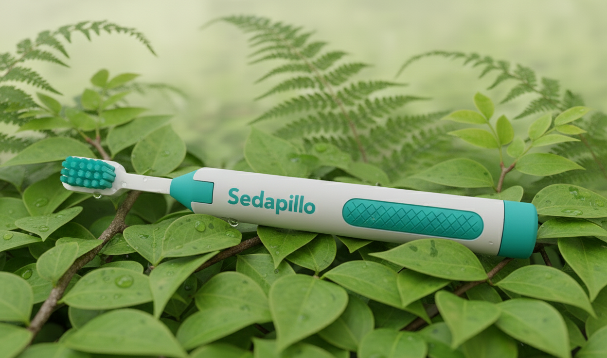

Conoce de forma rápida la esencia de nuestro diseño y su propuesta innovadora.
El diseño retráctil del Sedapillo integra un sistema de seda dental dentro del mango, ofreciendo una experiencia completa de higiene bucal en un solo dispositivo. Su ergonomía, materiales sostenibles y estética moderna lo hacen ideal para quienes buscan practicidad e innovación.
Explora, gira y amplía el modelo digital del Sedapillo para descubrir cada detalle de su diseño retráctil e innovador.
El Sedapillo combina funcionalidad y responsabilidad ambiental. Fabricado con materiales reciclables, promueve una rutina dental práctica y ecológica, reduciendo el consumo de plásticos desechables.
